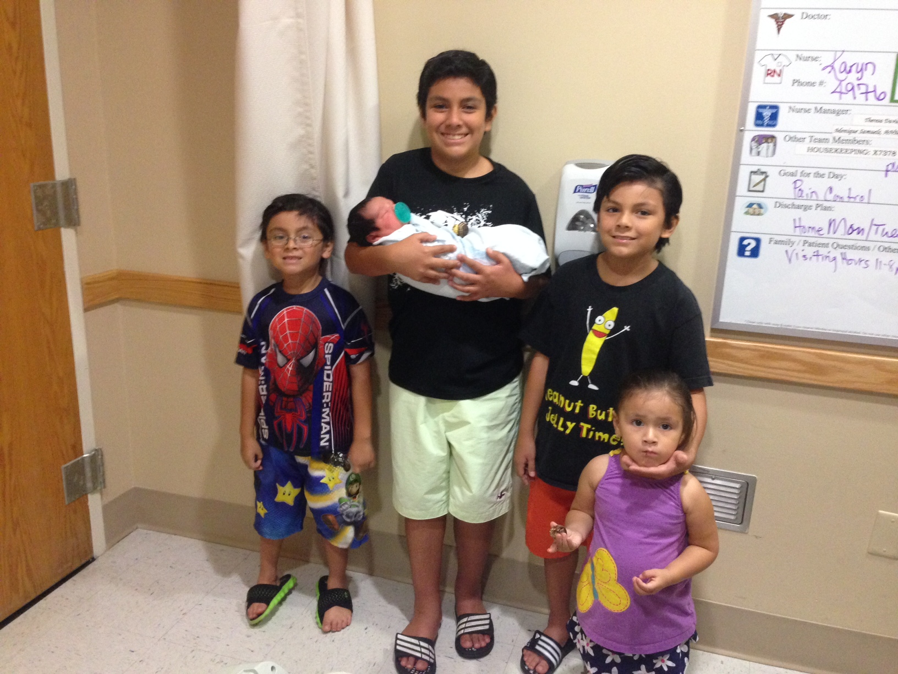
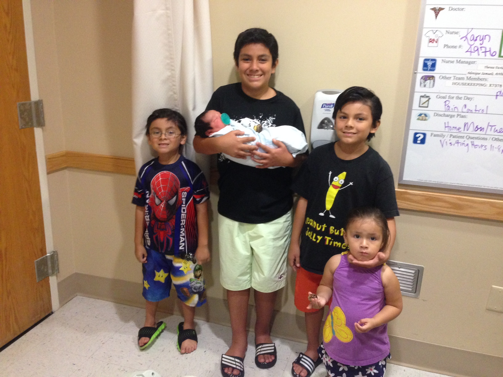

HOBBIES
Soccer
Favorite Team: FC Barcelona
Favorite Player: Lionel Messi
Experience: I played organized soccer for only one season when
I was 11. I coached my sons John and Matthew for three seasons
Rubik's Cube
I taught myself how to do a Rubik's cube when I was 13. I have
passed that knowledge onto to Robert and John. Matthew will be
next. It has been a couple of years since Robert surpassed me
Books
I am an avid book reader. Among my favorites:
Man's search for meaning by Viktor Frankl
Calculus Vols I and II by Tom Apostol
Race and Culture by Thomas Sowell
 Then Robert came along
And then John
And then Matthew
Then Robert came along
And then John
And then Matthew
 And then Brooke
And finally Eric
And then there were 5

And then Brooke
And finally Eric
And then there were 5
